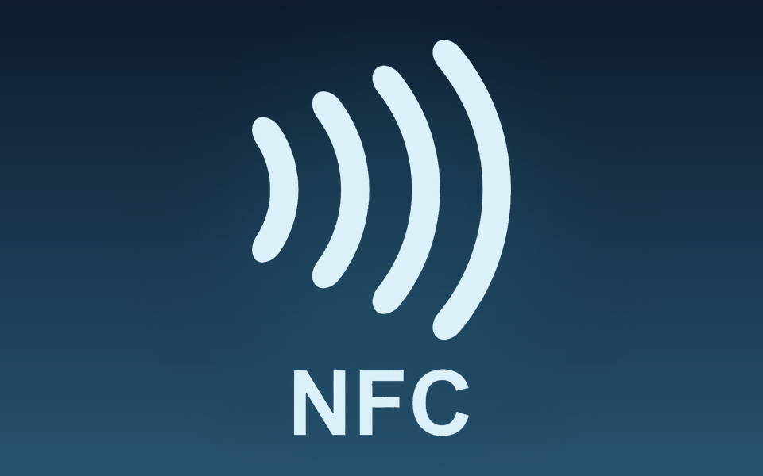

Clube de Caça e Pesca de Almeida
Full-stack management platform for members, events, registrations, payments and digital membership cards. React interface, Go API, MySQL persistence and Docker deployment.
Private repository · Project showcase
I'm João Antunes, an OutSystems Developer creating reliable business applications and modern web experiences. From complex SQL logic to interfaces people enjoy using.

const developer = {02 focus: 'OutSystems',03 mindset: 'Build. Improve.'04}; ▋My approach blends business logic, clean front-end engineering and practical problem-solving.

I hold a degree in Web Computing from the University of Beira Interior. My professional journey began at BABEL, where I developed OutSystems business applications, and continues at DestinyCloud.
Today I work with Reactive Web, Traditional Web, SQL, APIs and front-end technologies — translating complex requirements into useful digital products.
Projects where technology meets real-world needs. From OutSystems platforms to independent web experiments.
Full-stack management platform for members, events, registrations, payments and digital membership cards. React interface, Go API, MySQL persistence and Docker deployment.

Cordova NFC plugin adaptation for OutSystems MABS 10, bringing native NFC / NDEF functionality to mobile applications through JavaScript.

Tournament website for Viver Almeida 2026, featuring fixtures, results, rankings and live event information.

An interactive tour through Almeida, using GPS coordinates, clues and QR codes to explore local heritage.

A recipe-sharing platform with favourites, suggestions and content management.

Manage monthly expenses and income with a clear household-budget overview.

Room reservations, check-in, check-out and administrative management in one solution.

A lightweight calculator application focused on clear, extensible logic.

A dynamic video gallery with thumbnail-driven playback and a clean interface.

A music interface with playback controls, progress states and track details.

A product-card experience with thumbnail selection and interactive gallery states.
No projects in this category.
A path shaped by real business challenges, continuous learning and hands-on development.
From a first role at BABEL to delivering modern business solutions at DestinyCloud.
Designing, building and improving business applications, UI experiences, integrations and complex data workflows.
Development and maintenance of Reactive and Traditional Web applications for real business processes.
Three-year degree, following a foundation year in Computer Engineering (2018–2019).
Project contexts and organizations I've worked with during my professional journey in OutSystems.
Beyond personal projects, my work involves the evolution of enterprise applications, API integrations, complex data queries and solutions delivered in collaborative environments.
07 / PROJECT CONTEXTSOutSystems application delivery, user experiences and integration work in a professional team.
Participation in business applications, system integration and data-driven workflows.
Application delivery and ongoing evolution within a professional OutSystems project environment.
Participation in application development and maintenance for business processes.
Contributions to professional web application development and delivery.
Professional project participation focused on application maintenance and improvement.
Experience contributing to a collaborative application development project.
Names refer to professional projects and collaborations. Internal implementations and proprietary source code are not displayed.
A versatile toolkit for low-code products, integrations, databases and modern interfaces.
Reactive Web, Traditional Web, O11, ODC, application logic, integrations and scalable business workflows.
HTML, CSS, JavaScript, Angular and React for responsive digital experiences.
↗Queries, data modelling, reporting, REST integrations and technical problem-solving.
↗Working across technologies when the right solution requires a broader toolkit.
Continuous learning is part of how I build better and stay current in technology.
Udemy
MTA / Udemy
Udemy
Udemy
Udemy
Udemy
Udemy
Udemy
Udemy
Udemy
Udemy
Udemy
Udemy
Udemy